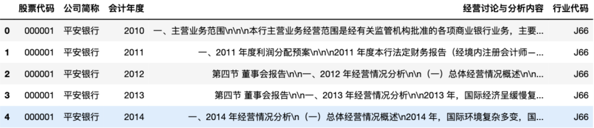
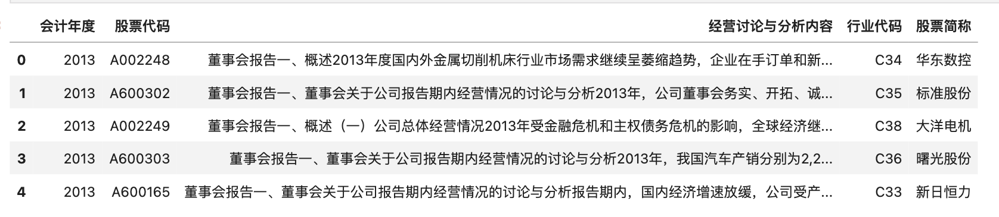
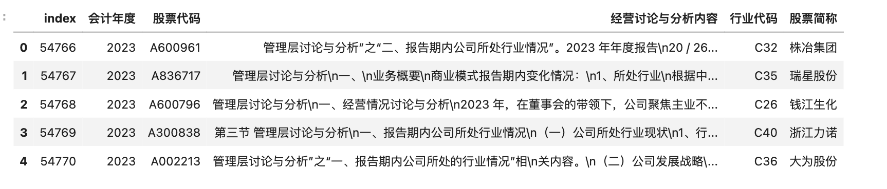
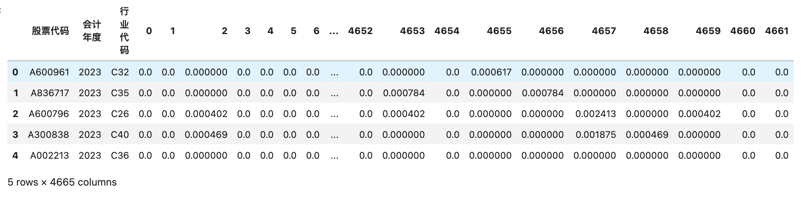
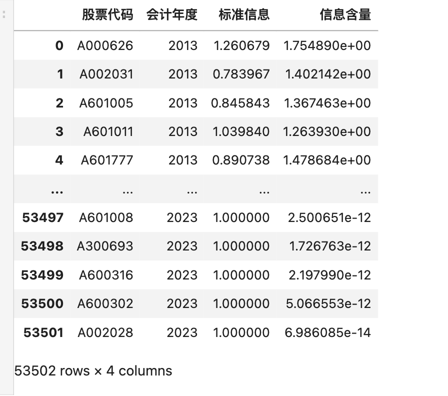

信息含量
由于每个公司的 MD&A 中不仅包括公司经营状况等历史信息， 也包括与其他公司相似的信息， 如外部环境、市场格局、风险因素等内容。 因此， 本文参考 Hanley and Hoberg （ 2010 ）， 从行业和市场两个维度来考察和定义公司 MD&A 中的信息含量。
- 市场因素， 所有上市公司都处于相同的宏观经济环境、风险因素和政治、政策背景之下；
- 行业因素， 同一行业中的各上市公司又面临着相似的产业政策、竞争环境和市场特征。
由此可见， 每个上市公司 MD&A 信息不可避免地在某种程度上与同行业其他上市公司以及市场其他行业上市公司存在一定的相似性， 甚至某些公司可能直接参考其他公司 MD&A 的表述。 可以将与行业其他公司或其他行业的公司重复或相似的信息定义为不具有信息含量的内容，同时将不同的信息定义为真正具有信息含量的内容，简称为信息含量。
孟庆斌, 杨俊华, and 鲁冰. “管理层讨论与分析披露的信息含量与股价崩盘风险——基于文本向量化方法的研究.” 中国工业经济 12 (2017): 132-150.
摘要
本文采用文本向量化的方法， 对 2007—2015 年中国 A 股上市公司年报的管理层讨论与分析（MD&A）所披露的信息含量加以度量， 研究其对股价崩盘风险的影响。 研究发现， MD&A 的信息含量越高，未来股价崩盘风险越低。 将 MD&A 进一步划分为回顾部分和展望部分后发现，仅有展望部分中的信息含量能够显著降低未来股价崩盘风险。 在控制内生性问题之后，本文的结论依然成立。 本文还分别从文本可读性和信息不对称的角度出发，研究它们对二者关系的影响。 结果表明，信息的可读性越高，信息不对称程度越高，展望部分的信息含量对股价崩盘风险的降低作用越大。 在重新定义股价崩盘风险的计算区间以及控制股价同步性之后， MD&A 展望部分的信息含量依然能够显著降低股价崩盘风险， 表明本文的结论是稳健的。 本文从文本信息的角度丰富了股价崩盘风险影响因素的研究， 同时也从增量信息的角度完善了 MD&A 信息有用性的研究，具有重要的理论和现实意义。
样本选择和处理
本文选取 2007 — 2015 年中国上市公司年报中的 MD&A 信息作为研究样本。 之所以选取 2007 年作为样本的起点， 是因为从 2007 年开始， MD&A 在企业定期报告中的披露要求已经较为完善， 而且 2007 年是中国会计准则国际趋同的重要时点， 新制定的《企业会计准则》已经开始实施， 为避免前后会计准则差异而产生的影响， 因此选取 2007 年作为样本区间的起点。
本文所使用的上市公司年度报告均来自于巨潮资讯网。 数据处理过程如下：
（ 1 ）剔除金融行业、 ST 和 *ST 类企业， 以及上市时间不足一年的企业。
（ 2 ）从 MD&A 的内容中分别提取回顾和展望部分， 保存为回顾信息文件和展望信息文件， 部分无法抓取出的年报通过手工收集处理。
（ 3 ）文本处理-文本向量化。 借鉴 Hanley and Hoberg （ 2010 ）的研究思路， 将每个 MD&A 文本通过向量的 形式表示出来， 其每个元素为文本中的每个词语出现的频率。 例如， 假设某 MD&A 文本中包含 10000 个词， 则该文本对应一个 10000×1 维的向量。 举一个简单的例子来描述文本向量化的过程： 在两个简化的 MD&A 文本中， 一个包含“我们生产土豆和生产玉米”， 另一个包含“我们生产家具”， 剔除连词“和”、代词“我们”之后， 只剩下“生产”、“土豆”、“玉米”、“家具”这 4 个词。 那么， 在第一个 MD&A 文本中， “生产”、“土豆”和“玉米”分别出现了 2 次、 1 次和 1 次， 而“家具”出现 0 次， 所以该 文本的向量为 {2 ， 1 ， 1 ， 0} ， 同样得到第二个文本的向量为 {1 ， 0 ， 0 ， 1} 。
（ 4 ）向量标准化。 对于向量化的文本， 仍需解决文本长度不同导致的结果不可比问题。 一般来说， 某一个词在长文本中重复出现的次数较多， 在短文本中重复出现的次数较少， 但并不能因此说 长文本比短文本的信息量大。 为此， 本文进一步将这些向量进行标准化处理， 即将该向量除以文本 中单词的总数， 得到标准化后的向量。 在上面的例子中， 两个公司的标准化之后的向量就成为了 {0.50 ， 0.25 ， 0.25 ， 0} 和 {0.50 ， 0 ， 0 ， 0.50} 。
文件目录
管理层讨论信息含量/
├── 信息含量计算代码.ipynb
├── data/
│ ├── 行业代码.xlsx
│ └── mda10-20.xlsx
├── mda_infor.csv
├── output/
│ └── 2020/
│ ├── 000002.csv
│ ├── 000004.csv
│ ├── 000005.csv
│ ├── 000006.csv
│ ├── ...
│ └── 2019/
│ ├── 000002.csv
│ ├── 000004.csv
│ ├── 000005.csv
│ ├── 000006.csv
│ ├── ...
│ └── 2018/
│ ├── 000002.csv
│ ├── 000004.csv
│ ├── 000005.csv
│ ├── 000006.csv
│ ├── 000006.csv
│ ├── ...
│ └── ...
一、导入数据
这里准备了2010-2020年A股经营讨论与分析内容和行业代码数据。
import pandas as pd
# converters 强制声明该列为字符串， 防止股票代码 被程序识别为数字，
# 完整数据370+M
df = pd.read_excel('data/mda10-20.xlsx', converters={'股票代码': str})
#上市公司行业信息
ind_info_df = pd.read_excel('data/行业代码.xlsx', converters={'股票代码': str})
df = pd.merge(df, ind_info_df, on=['股票代码', '会计年度'], how='inner')
#显示前5行
df.head()
Run

# 剔除金融行业处理
df = df[~df['行业代码'].str.contains("J")]
df = df[~df['公司简称'].str.contains("ST")]
df.head()
Run

二、以2020年为例
写代码先局部后整体，以2020年为例，如果2020年可以成功计算出信息含量，则可以for循环推广到所有股票所有年份。本章节需要做
- 选定某年份，以2020年为例
- 定义transform函数，用于处理「经营讨论与分析内容」字段内的内容。
- 文本向量化，向量标准化。
2.1 选定2020年
df_per_year = df[df['会计年度']==2020]
df_per_year.reset_index(inplace=True)
df_per_year.head()
Run

2.2 定义transform函数
定义transform函数，该函数可以处理「经营讨论与分析内容」字段内容，使其:
- 只保留中文内容
- 剔除停用词
- 整理为用空格间隔的字符串(类西方语言文本格式)
之后应用 transform函数， 使用apply方法， 处理 df_per_year[‘经营讨论与分析内容’] 。
import cntext as ct
import jieba
import re
stopwords = ct.load_pkl_dict('STOPWORDS.pkl')['STOPWORDS']['chinese']
def transform(text):
#只保留md&a中的中文内容
text = ''.join(re.findall('[\u4e00-\u9fa5]+', text))
#剔除停用词
words = [w for w in jieba.cut(text) if w not in stopwords]
#整理为用空格间隔的字符串(类西方语言文本格式)
return ' '.join(words)
df_per_year['clean_text'] = df_per_year['经营讨论与分析内容'].apply(transform)
Building prefix dict from the default dictionary ...
Loading model from cache /var/folders/sc/3mnt5tgs419_hk7s16gq61p80000gn/T/jieba.cache
Loading model cost 0.556 seconds.
Prefix dict has been built successfully.
2.3 文本向量化
本小节要做:
- 文本向量化
- 向量标准化
- 合并多个字段为新的df
先将df_per_year[‘clean_text’] 向量化，代码如下
from sklearn.feature_extraction.text import CountVectorizer
cv = CountVectorizer(min_df=0.05, max_df=0.5)
# 生成稀疏bow矩阵
dtm_per_year = cv.fit_transform(df_per_year['clean_text'])
dtm_per_year = pd.DataFrame(dtm_per_year.toarray())
dtm_per_year
Run
import numpy as np
#向量标准化
dtm_per_year = dtm_per_year.apply(lambda row: row/np.sum(row), axis=1)
dtm_per_year
Run
#合并多个字段为新的df
dtm_per_year = pd.concat([df_per_year[['股票代码', '会计年度', '行业代码']], dtm_per_year], axis=1)
dtm_per_year.head()
Run

三、计算2020年行业向量、市场向量
计算2020年所有公司的市场向量、行业向量。这里
import os
import pandas as pd
for idx in range(len(dtm_per_year)):
code = dtm_per_year.loc[idx, '股票代码']
ind = dtm_per_year.loc[idx, '行业代码']
year = dtm_per_year.loc[idx, '会计年度']
ind_freq = dtm_per_year[dtm_per_year['行业代码']==ind][dtm_per_year['股票代码']!=code].iloc[:, 3:].mean(axis=0)
market_freq = dtm_per_year[dtm_per_year['行业代码']!=ind].iloc[:, 3:].mean(axis=0)
dtm_per_year_melted = dtm_per_year.melt(id_vars=['股票代码', '会计年度', '行业代码'],
var_name='word_id',
value_name='word_freq')
corporate_df = pd.DataFrame({'word_id': dtm_per_year_melted[dtm_per_year_melted['股票代码']==code]['word_id'].values,
'word_freq': dtm_per_year_melted[dtm_per_year_melted['股票代码']==code]['word_freq'].values,
'ind_freq': ind_freq,
'market_freq':market_freq})
corporate_df['股票代码'] = code
corporate_df['行业代码'] = ind
corporate_df['会计年度'] = year
corporate_df.reset_index(inplace=True)
corporate_df = corporate_df[['股票代码', '行业代码', '会计年度', 'word_id', 'word_freq', 'ind_freq', 'market_freq']]
if not os.path.exists('output/{year}'.format(year=year)):
os.mkdir('output/{year}'.format(year=year))
corporate_df.to_csv('output/{year}/{code}.csv'.format(year=year, code=code), index=False)
四、计算2010-2020年所有公司行业向量、市场向量
信息含量的定义。 由于每个公司的 MD&A 中不仅包括公司经营状况等历史信息， 也包括与其他公司相似的信息， 如外部环境、市场格局、风险因素等内容。 因此， 本文参考 Hanley and Hoberg （ 2010 ）， 从行业和市场两个维度来考察和定义公司 MD&A 中的信息含量。
- 市场因素， 所有上市公司都处于相同的宏观经济环境、风险因素和政治、政策背景之下；
- 行业因素， 同一行业中的各上市公司又面临着相似的产业政策、竞争环境和市场特征。
由此可见， 每个上市公司 MD&A 信息不可避免地在某种程度上与同行业其他上市公司以及市场其他行业上市公司存在一定的相似性， 甚至某些公司可能直接参考其他公司 MD&A 的表述。
参考文中截图行业向量、市场向量计算方法，有如下代码。该部分代码运行较慢，全部运行下来大约10小时。
from sklearn.feature_extraction.text import CountVectorizer
import numpy as np
import pandas as pd
import cntext as ct
import jieba
import os
import re
stopwords = ct.load_pkl_dict('STOPWORDS.pkl')['STOPWORDS']['chinese']
def transform(text):
#只保留md&a中的中文内容
text = ''.join(re.findall('[\u4e00-\u9fa5]+', text))
#剔除停用词
words = [w for w in jieba.cut(text) if w not in stopwords]
#整理为用空格间隔的字符串(类西方语言文本格式)
return ' '.join(words)
# converters 强制声明该列为字符串， 防止股票代码 被程序识别为数字，
df = pd.read_excel('data/mda10-20.xlsx', converters={'股票代码': str})
#上市公司行业信息
ind_info_df = pd.read_excel('data/行业代码.xlsx', converters={'股票代码': str})
df = pd.merge(df, ind_info_df, on=['股票代码', '会计年度'], how='inner')
# 剔除金融行业处理
df = df[~df['行业代码'].str.contains("J")]
df = df[~df['公司简称'].str.contains("ST")]
for year in [2010, 2011, 2012, 2013]:
#for year in set(df['会计年度'].values):
df_per_year = df[df['会计年度']==year]
df_per_year.reset_index(inplace=True)
df_per_year['clean_text'] = df_per_year['经营讨论与分析内容'].apply(transform)
cv = CountVectorizer(min_df=0.05, max_df=0.5)
# 生成稀疏bow矩阵
dtm_per_year = cv.fit_transform(df_per_year['clean_text'])
dtm_per_year = pd.DataFrame(dtm_per_year.toarray())
dtm_per_year = dtm_per_year.apply(lambda row: row/np.sum(row), axis=1)
dtm_per_year = pd.concat([df_per_year[['股票代码', '会计年度', '行业代码']], dtm_per_year], axis=1)
for idx in range(len(dtm_per_year)):
code = dtm_per_year.loc[idx, '股票代码']
ind = dtm_per_year.loc[idx, '行业代码']
year = dtm_per_year.loc[idx, '会计年度']
ind_freq = dtm_per_year[dtm_per_year['行业代码']==ind][dtm_per_year['股票代码']!=code].iloc[:, 3:].mean(axis=0)
market_freq = dtm_per_year[dtm_per_year['行业代码']!=ind].iloc[:, 3:].mean(axis=0)
dtm_per_year_melted = dtm_per_year.melt(id_vars=['股票代码', '会计年度', '行业代码'],
var_name='word_id',
value_name='word_freq')
corporate_df = pd.DataFrame({ 'word_id': dtm_per_year_melted[dtm_per_year_melted['股票代码']==code]['word_id'].values,
'word_freq': dtm_per_year_melted[dtm_per_year_melted['股票代码']==code]['word_freq'].values,
'ind_freq': ind_freq,
'market_freq':market_freq})
corporate_df['股票代码'] = code
corporate_df['行业代码'] = ind
corporate_df['会计年度'] = year
corporate_df.reset_index(inplace=True)
corporate_df = corporate_df[['股票代码', '行业代码', '会计年度', 'word_id', 'word_freq', 'ind_freq', 'market_freq']]
if not os.path.exists('output/{year}'.format(year=year)):
os.mkdir('output/{year}'.format(year=year))
corporate_df.to_csv('output/{year}/{code}.csv'.format(year=year, code=code), index=False)
五、标准信息、信息含量
以2020年000002为例，计算其标准信息、信息含量。计算成功后，再计算所有年份所有上市公司 md&a的标准信息、信息含量。
原文除了计算md&a，还将md&a区分为回顾过去、展望未来两部分，并分别计算了对应的标准信息、信息含量。这里只计算md&a的标准信息、信息含量。
这里使用Python的统计模型statsmodels库OLS来计算标准信息和信息含量。
import pandas as pd
csv_df = pd.read_csv('output/2020/000002.csv', converters={'股票代码': str})
csv_df.head()
Run
#更改字段名
csv_df.columns = ['股票代码', '行业代码', '会计年度', 'word_id', 'Norm', 'Norm_Ind', 'Norm_Market']
csv_df.head()
Run
import statsmodels.formula.api as smf
#因变量Norm
#解释变量Norm_Ind、 Norm_Market
formula = 'Norm ~ Norm_Ind + Norm_Market'
model = smf.ols(formula, data=csv_df)
result = model.fit()
print(result.summary())
Run
OLS Regression Results
==============================================================================
Dep. Variable: Norm R-squared: 0.319
Model: OLS Adj. R-squared: 0.318
Method: Least Squares F-statistic: 763.9
Date: Fri, 06 Jan 2023 Prob (F-statistic): 6.88e-273
Time: 06:37:27 Log-Likelihood: 17334.
No. Observations: 3269 AIC: -3.466e+04
Df Residuals: 3266 BIC: -3.464e+04
Df Model: 2
Covariance Type: nonrobust
===============================================================================
coef std err t P>|t| [0.025 0.975]
-------------------------------------------------------------------------------
Intercept 1.164e-05 2.86e-05 0.407 0.684 -4.44e-05 6.77e-05
Norm_Ind 0.7486 0.020 37.460 0.000 0.709 0.788
Norm_Market 0.2133 0.064 3.327 0.001 0.088 0.339
==============================================================================
Omnibus: 4804.262 Durbin-Watson: 2.026
Prob(Omnibus): 0.000 Jarque-Bera (JB): 4165802.983
Skew: 8.425 Prob(JB): 0.00
Kurtosis: 177.069 Cond. No. 3.05e+03
==============================================================================
Notes:
[1] Standard Errors assume that the covariance matrix of the errors is correctly specified.
[2] The condition number is large, 3.05e+03. This might indicate that there are
strong multicollinearity or other numerical problems.
#标准信息
standard_info = result.params.Norm_Ind + result.params.Norm_Market
#信息含量
informative_content = sum(abs(result.resid))
print('000002标准信息: {}'.format(standard_info))
print('000002信息含量: {}'.format(informative_content))
Run
000002标准信息: 0.9619640977801796
000002信息含量: 1.2750713760886476
既然能成功计算某年某公司的标准信息、信息含量，现在推广到所有年份所有公司，计算结果存储为一个csv文件。
import os
import csv
import statsmodels.formula.api as smf
import re
#结果存储到mda_infor.csv
with open('mda_infor.csv', 'a+', encoding='utf-8', newline='') as csvf:
fieldnames = ['股票代码', '会计年度', '标准信息', '信息含量']
writer = csv.DictWriter(csvf, fieldnames=fieldnames)
writer.writeheader()
year_dirs = os.listdir('output')
year_dirs = [y for y in year_dirs if 'DS' not in y]
for year_dir in year_dirs:
code_csvfs = ['output/{year}/{csvf}'.format(year=year_dir, csvf=f)
for f in os.listdir('output/{}'.format(year_dir))]
code_csvfs = [f for f in code_csvfs if 'DS' not in f]
for csvf in code_csvfs:
try:
csv_df = pd.read_csv(csvf, converters={'股票代码': str})
csv_df.columns = ['股票代码', '行业代码', '会计年度', 'word_id', 'Norm', 'Norm_Ind', 'Norm_Market']
formula = 'Norm ~ Norm_Ind + Norm_Market'
model = smf.ols(formula, data=csv_df)
result = model.fit()
#标准信息
standard_info = result.params.Norm_Ind + result.params.Norm_Market
#信息含量
informative_content = sum(abs(result.resid))
data = {'股票代码': re.findall('\d{6}', csvf)[0],
'会计年度': re.findall('\d{4}', csvf)[0],
'标准信息': standard_info,
'信息含量': informative_content}
writer.writerow(data)
except:
pass
最后
读取生成的 ‘mda_infor.csv’ 文件，欣赏一下 标准信息、信息含量
import pandas as pd
df = pd.read_csv('mda_infor.csv', converters={'股票代码': str})
df.head()
Run

需要注意，原文选取 2007 — 2015 年中国上市公司年报中的 MD&A 信息作为研究样本。 之所以选取 2007 年作为样本的起点， 是因为从 2007 年开始， MD&A 在企业定期报告中的披露要求已经较为完善， 而且 2007 年是中国会计准则国际趋同的重要时点， 新制定的《企业会计准则》已经开始实施， 为避免前后会计准则差异而产生的影响， 因此选取 2007 年作为样本区间的起点。
mda_infor.csv含有2010-2020年的数据，如要复现原文，需要注意筛选数据。
print('mda_infor.csv记录数:',len(df))
Run
mda_infor.csv记录数: 30173
数据代码获取
撰写本文代码耗时一个工作日，程序运行又额外耗时 10 小时。原创不易，请勿白嫖，转发集赞 50+，保留 2 小时，加微信 372335839， 备注「姓名-学校-专业-信息含量」。已购买 支持开票 | Python实证指标构建与文本分析 课程学员，可私信大邓，直接获取本文数据、代码。